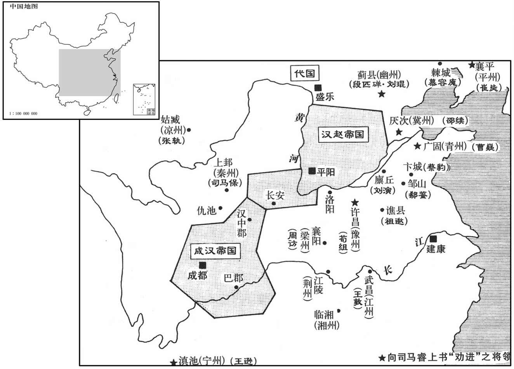
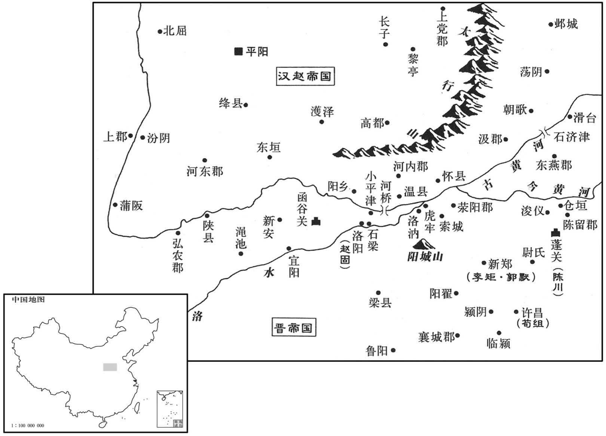
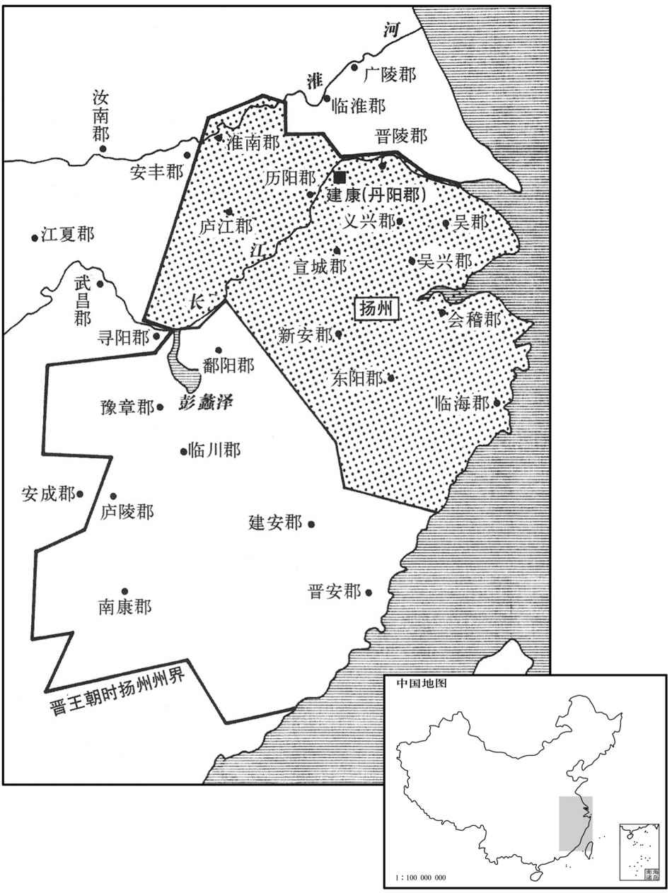
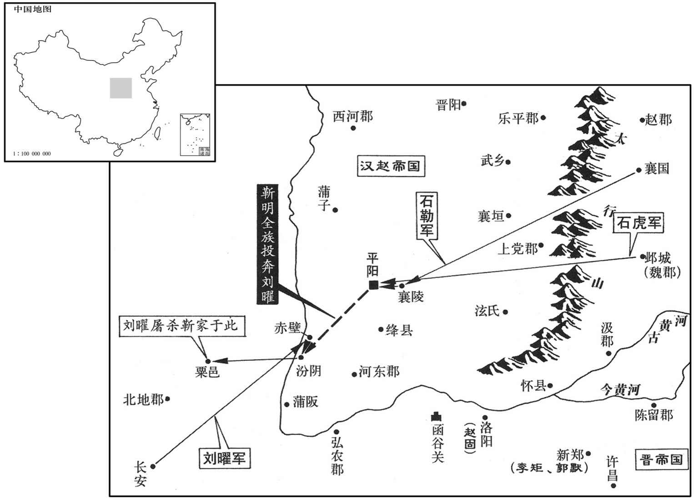

卷次与人物目录 / 卷90
资治通鉴 · 卷第九十【晋纪十二】
公元317年至公元318年 · 原文、白话与胡三省注
本页按胡注本编排保存全卷内容。白话采用本站所据译本，未可靠对应的内容另列说明；事件标题用于定位，并非原书文字。
本卷共75段原文，75段有译文对应，0段缺译或待核对。
卷第九十【晋纪十二】起强圉赤奋若（丁丑），尽着雍摄提格（戊寅），凡二年。
卷首原文与注释
中宗元皇帝上〔讳睿，字景，字文，宣帝曾孙，琅邪武王軎之孙，恭王观之子。谥法：始建国都曰元。〕
公元317年 · 晋中宗元皇帝建武元年
建武元年〔（丁丑、三十七）是年三月，方改元。〕
上传原文件年头的数字有误；按本卷年号与相邻年份定位为317年，原字保留。
本年事件索引（现代整理）
- 汉军向东攻弘农郡，太守宋哲逃奔江东
- 黄门郎史淑、侍御史王冲从长安逃奔凉州
- 张的叔父张肃任西海太守，听说晋都长安危亡在即
- 张遣太府司马韩璞、抚戎将军张阆等率领步兵和骑兵共一万人向东攻击汉军
- 军队行至南安，被多支羌人部族截断退路
- 长安失陷以前，曾有民谣对话
- 汉主刘聪派堂弟刘畅率领步兵、骑兵三万攻荥阳
- 宋哲到达建康，称说奉晋愍帝诏书
- 主掌官员论礼制
- 刘琨和段匹歃血盟誓，相约共同拥戴和辅佐晋王室
- 晋王任鲜卑大慕容为辽左杂夷、流民诸军事、龙骧将军、大单于、昌黎公
- 刘聪以酷刑诬陷并诛杀太弟刘乂
- 发生日食
- 温峤等人到达建康
- 祖逖诱降张平、樊雅据谯
- 汉主刘聪立晋王刘粲为皇太子，领相国职务、大单于称号
- 晋王传布檄文于天下，内对话
- 旱情严重
- 段匹推举刘琨为大都督
- 晋王任荀组为司徒
- 汉将赵固在临颍击杀卫将军华荟
- 赵固与长史周振不和，周振私下在汉主刘聪面前诋毁赵固
- 郑攀等人共同抗拒王
- 王将前往荆州，留下长史刘浚镇守扬口壁垒
- 将士皆腾跃奔赴，曾遂大溃
- 琅邪王司马裒卒
- 出现日食
- 晋王任刘琨为侍中、太尉
- 征南军司戴邈上疏进言论礼制
- 刘聪以愍帝执戟侍宴并杀晋臣辛宾
- 赵固和河内太守郭默进犯汉国河东，到达绛县
- 这年，晋王下令考核、督促农业生产
- 氐族酋长杨茂搜死去，长子杨难敌继位
- 河南王吐谷浑死去
春，正月，汉兵东略弘农，太守宋哲奔江东。〔哲屯华阴，汉兵自长安东略，故弃城来奔。守，式又翻。〕
春季，正月，汉军向东进攻弘农郡，太守宋哲逃奔江东。

本年形势与背景参考图

本年形势与背景参考图
黄门郎史淑、侍御史王冲自长安奔凉州，称愍帝出降前一日，〔降，户江翻。〕使淑等赍诏赐张寔，拜寔大都督、凉州牧、侍中、司空，承制行事；且曰：「朕已诏琅邪王时摄大位；君其协赞琅邪，共济多难。」淑等至姑臧，寔大临三日，〔难，乃旦翻。临，力鸩翻。〕辞官不受。
黄门郎史淑、侍御史王冲从长安逃奔凉州，称说西晋愍帝出降前一天，派他们携带诏书赐封张，拜张为大都督、凉州牧、侍中、司空，禀承制书处理事宜。诏书还说：“朕已下诏琅邪王及时代摄帝位，希望你们协助琅邪王，共渡多难之秋。”史淑等到达姑臧，张隆重哭奠愍帝三天，辞谢不接受封职。
初，寔叔父肃为西海太守，〔王莽置西海郡，光武中兴，弃之。至献帝兴平二年，武威太守张雅请置西海郡，分张掖之居延一县以属之，虽郡名同，而非王莽西海郡之地。〕闻长安危逼，请为先锋入援；寔以其老，弗许。及闻长安不守，肃悲愤而卒。〔卒，子恤翻。〕
当初，张的叔父张肃任西海太守，听说晋都长安危亡在即，自请任先锋赴援。张以他年老为由不同意。等到听说长安失守，张肃悲愤而死。
寔遣太府司马韩璞、〔时张氏保据河西，有太府司马、太府，少府主簿等官；盖以都督府为太府，凉州府为少府也。璞，匹角翻。〕抚戎将军张阆等帅步骑一万东击汉；〔抚戎将军，盖张氏创置。帅，读曰率。骑，奇寄翻。〕命讨虏将军陈安、〔沈约志，魏置将军四十号，讨虏第十九。〕安故太守贾骞、〔晋志曰：张茂分武兴、金城、西平、安故四郡为定州。盖张氏分金城、西平二郡地置安故郡也。按安故县，二汉属陇西郡。水经注：洮水自临洮县东流，又屈而北流，径安故县故城西，又北径狄道县故城西。狄道，时己置武始郡；安故郡，盖即汉之一县置郡。〕陇西太守吴绍各统郡兵为前驱。又遗相国保书曰：「王室有事，不忘投躯。前遗贾骞瞻公举动，中被符命，敕骞还军。〔符命，盖保符下寔也。遗，于季翻。被，皮义翻。〕俄闻寇逼长安，胡崧不进，曲允持金五百，请救于崧，遂决遣骞等进军度岭。〔自凉州济河度沃于岭，至狄道。〕会闻朝廷倾覆，为忠不遂，愤痛之深，死有余责。今更遣璞等，唯公命是从。」璞等卒不能进而还。
张派遣太府司马韩璞、抚戎将军张阆等率领步兵和骑兵共一万人向东攻击汉军，命令讨虏将军陈安、安故太守贾骞、陇西太守吴绍各自统领本郡兵马为前驱。又送信给相国司马保说：“晋王室遇有灾祸，我没忘投身报效。以前曾派遣贾骞视先生举动行事，后来接受符命，敕令贾骞回军。不久听说敌寇进逼长安，胡崧屯兵不前，允带着五百金向他求救，于是我决定派遣贾骞等翻山越岭进军赴援，刚好听说朝廷已经倾覆，未能实现尽忠的愿望，我悲痛心情之深重，虽死也有余责。现在重新派遣韩璞等率军前往，一切听从您的命令。”韩璞等人的军队始终不能东进，只好退军。
至南安，〔南安郡，治獂道县。卒，子恤翻。还，从宣翻，又如字。〕诸羌断路，〔断，丁管翻。〕相持百余日，粮竭矢尽。璞杀车中牛以飨士，泣谓之曰：「汝曹念父母乎﹖」曰：「念。」「念妻子乎﹖」曰：「念。」「欲生还乎﹖」曰：「欲。」「从我令乎﹖」曰：「诺。」乃鼓噪进战，会张阆帅金城兵继至，夹击，大破之，斩，首数千级。〔帅，读曰率；下同。〕
军队行至南安，被多支羌人部族截断退路，双方相持一百多天，韩璞等人的军队箭尽粮绝。韩璞把拉车之牛杀掉犒饷士卒，流着眼泪对他们说：“你们思念父母吗？”士卒回答：“思念。”“思念妻子儿女吗？”回答说：“思念。”“想活着回家吗？”回答说：“想。”韩璞又问：“愿意听从我的号令吗？”士卒回答说：“愿意。”于是擂鼓呐喊，进击博战。适逢张阆率金城士兵随后赶到，夹击羌人，大破敌军，斩首数千。
先是，长安谣曰：「秦川中，血没腕，唯有凉州倚柱观。」〔腕，乌贯翻。〕及汉兵覆关中，氐、羌掠陇右，雍、秦之民，死者什八九，〔雍，于用翻。〕独凉州安全。
长安失陷以前，曾有民谣说：“秦川之中，血流没腕，唯有凉州倚柱旁观。”等到汉军攻陷关中，氐族、羌族攻掠陇右，雍州、秦州的人民十有八九死亡，唯独凉州安然无恙。
二月，汉主聪使从弟畅〔从，才用翻。〕帅步骑三万攻荥阳太守李矩，屯韩王故垒，相去七里，〔李矩屯新郑，则韩王故垒亦在新郑也。战国时，韩灭郑，徙都之，故有故垒在焉。〕遣使招矩。〔使，疏吏翻。〕时畅兵猝至，矩未及为备，乃遣使诈降于畅。畅不复设备，大飨，渠帅皆醉。〔降，户江翻。复，扶又翻。帅，所类翻。〕矩欲夜袭之，士卒皆恇惧，〔恇，去王翻。〕矩乃遣其将郭诵祷于子产祠，〔子产相郑人怀其惠，为之立祠。〕使巫扬言曰：「子产有教，遣神兵相功。」众皆踊跃争进。矩选勇敢千人，使将之，〔将，即亮翻。〕掩击畅营，斩首数千级，畅仅以身免。
二月，汉主刘聪派堂弟刘畅率领步兵、骑兵三万进攻荥阳，荥阳太守李矩屯兵韩王故旧壁垒，双方相距七里，刘畅派遣使者招降李矩。当时刘畅的军队突然到达，李矩来不及设备防御，于是派遣使者见刘畅，诈称愿降。刘畅不再防备，大肆犒劳士卒，主要将领都喝醉了。李矩打算乘夜偷袭，但手下士卒都心存畏惧，李矩便派部将郭诵到子产祠祝祷，让巫祝扬言说：“子产神灵告知，到时会派遣神兵相助”。众人都踊跃争先。李矩挑选勇士千人，令郭诵率领他们，突然袭击刘畅军营，斩首数千。刘畅只身逃出，仅免于死。
辛巳，宋哲至建康，〔沈约曰：建康，本秣陵县，汉献帝建安十六年置；孙权改秣陵为建业，武帝平吴，还为秣陵；太康三年，分秣陵之水北为建业；愍帝即位，避帝讳，改为建康。〕称受愍帝诏，令丞相琅邪王睿统摄万机。三月，琅邪王素服出次，〔杜预曰：出次，避正寝。〕王不许。羕等固请不已，王慨然流涕曰：「孤，罪人也。诸贤见逼不已，当归琅邪耳！」呼私奴，命驾将归国。〔私奴，谓私所畜养而给使令之奴，非以罪没官者。〕羕等乃请依魏、晋故事，称晋王；许之。辛卯，即晋王位，大赦，改元；始备百官立宗庙，建社稷。
辛巳（二十八日），宋哲到达建康，称说奉晋愍帝诏书，令丞相、琅邪王司马睿总摄国家所有事宜。三月，琅邪王换上素色服装，避居于别室，举哀三天。此时西阳王司马和官员、部属等共同进上皇帝尊号，琅邪王不肯即位。司马等坚持请求，不肯罢休。琅邪王感慨地流着眼泪说：“孤是有罪之人。诸位贤良如果逼我不止，我将返归琅邪封国。”并传呼私人奴仆，让他们驾车准备返回封国。司马等于是请求琅邪王依照魏、晋旧有成例，称晋王。琅邪王同意了。辛卯（初九），琅邪王即晋王位，大赦天下，改年号为建武，开始设置百官，建立宗庙和社稷。
有司请立太子，王爱次子宣城公裒，欲立之，〔裒，蒲侯翻。〕谓王导曰：「立子当以德。」导曰：「世子、宣城，俱有朗隽之美，而世子年长。」〔长，知两翻。〕王从之。丙辰，立世子绍为王太子；封裒为琅邪王，奉恭王后;〔帝后十宗，故以裒奉琅邪国祀。〕仍以裒都督青、徐、兖三州诸军事，镇广陵。以西阳王羕为太保，封谯刚王逊之子承为谯王。〔一本作「谯王承〔氶〕，音拯。〕逊，宣帝之弟子也。又以征南大将军王敦为大将军、江州牧，扬州刺史王导为骠骑将军、都督中外诸军事、领中书监、录尚书事，〔骠，匹妙翻。〕丞相左长史刁协为尚书左仆射，右长史周顗为吏部尚书，军谘祭酒〔顗，鱼岂翻。〕贺循为中书令，右司马戴渊、王邃为尚书，司直刘隗为御御史中丞，行参军刘超为中书舍人，〔晋志曰：中书，晋初置舍人、通事各一人，江左合舍人、通事，谓之通事舍人，掌呈奏案。〕参军事孔愉长兼中书郎；〔长兼，盖始于此。〕自余参军悉拜奉车都尉，掾属拜驸马都尉，行参军舍人拜骑都尉。〔三都尉，皆汉武帝置。奉车都尉，掌御乘舆车；驸马都尉，掌驸马；骑都尉，掌监羽林骑。师古曰：驸，副马也；非正驾车，皆为副马。一曰：驸，近也，疾也。晋武帝以宗室、外戚为三都尉；江左后罢奉车、骑二都尉，唯留驸马都尉，奉朝请，诸尚公主者为之。掾，俞绢翻。〕王敦辞州牧，王导以敦统六州，辞中外都督，贺循以老病辞中书令，王皆许之；以循为太常。是时承丧乱之后，江东草创，〔广雅曰：草，造也；创，始也。丧，息浪翻。〕刁协久宦中朝，谙练旧事，〔谙，乌含翻，悉也，记也。朝，直遥翻。〕贺循为世儒宗，明习礼学，凡有疑议，皆取决焉。
主掌官员请求立太子，晋王喜爱次子宣城公司马裒，想立他为太子，对王导说：“立太子应当视其德行。”王导说：“世子与宣城公，都有清朗隽秀的美德，但世子年长。”晋王听从了王导的意见。丙辰（疑误），晋王立世子司马绍为王太子，封司马裒为琅邪王，继承恭王的祭祀；仍任司马裒为都督青、徐、兖三州诸军事，镇守广陵。任西阳王司马为太保，封谯刚王司马逊的儿子司马承为谯王。司马逊是晋宣帝弟弟的儿子。又任征南大将军王敦为大将军、江州牧；扬州刺史王导为骠骑将军、都督内外诸军事、领中书监和录尚书事。丞相左长史刁协被任为尚书左仆射，右长史周被任为吏部尚书，军谘祭酒贺循任中书令，右司马戴渊、王邃为尚书，司直刘隗任御史中丞，行参军刘超为中书舍人，参军事孔愉长兼中书郎，其余参军全部封官奉车都尉，部属封驸马都尉，行参军舍人官拜骑都尉。王敦辞谢江州牧的官职，王导因为王敦已统领六州，辞谢都督内外诸军事的职务，贺循因年老多病辞去中书令，都获得晋王的同意。任命贺循为太常。此时承续西晋的丧乱之后不久，江南东晋政权刚刚草创，因刁协久在西晋时为官，熟悉旧制；贺循为当世儒学泰斗，精通礼学，所以凡遇疑碍难决的问题，都由他们定夺。
刘琨、段匹磾相与歃血同盟，〔磾，丁奚翻。歃，色洽翻，歠也。〕期以翼戴晋室。辛丑，琨檄告华、夷，遣兼左长史、右司马温峤，匹磾遣左长史荣卲，奉表及盟文诣建康劝进。〔汉之禅于魏也，文帝三让，魏朝群臣累表请顺天人之望，此则劝进之造端也。晋受魏禅，何曾等亦然。是时愍帝蒙尘，四海无君，琨等劝进，为得其正。〕峤，羡之弟子也，〔温羡见八十六卷惠帝永兴二年。〕峤之从母为琨妻。〔母之姊妹为母。从，才用翻。〕琨谓峤曰：「晋祚虽衰，天命未改，吾当立功河朔，使卿延誉江南。行矣，勉之！」
刘琨和段匹歃血盟誓，相约共同拥戴和辅佐晋王室。辛丑（疑误），刘琨发布檄文遍告汉族和其他民族，自己派遣兼左长史、右司马温峤，段匹派遣左长史荣邵，共同奉呈上表和盟约誓文前往建康进劝晋王即帝位。温峤是温羡兄弟的儿子，其姨母是刘琨的妻子，刘琨对温峤说：“晋朝国运虽然中衰，但天命尚未变易，我将建立功名于河朔，让你的声誉流播江南。去吧，努力为之！”
王以鲜卑大都督慕容廆为都督辽左杂夷流民诸军事、龙骧将军、大单于、昌黎公；廆不受。〔辽左，即辽东。流民，谓中州之民流移入辽东者。廆，户罪翻。骧，思将翻。〕征虏将军鲁昌说廆曰：「今两京覆没，天子蒙尘，〔左传，叔带之难，襄王出居于郑，使告难于鲁。臧文仲对曰：「天子蒙尘于外，敢不奔问官守。」说输芮翻。〕琅邪王承制江东，为四海所系属。〔属，之欲翻。〕明公唯雄据一方，而诸部犹阻兵未服者，盖以官非王命故也。谓宜通使琅邪，〔使，疏吏翻；下同。〕劝承大统，然后奉诏令以伐有罪，谁敢不从！」处士辽东高诩曰：〔处，昌吕翻。〕「霸王之资，非义不济。今晋室虽微，人心犹附之，宜遣使江东，示有所尊，然后仗大义以征诸部，不患无辞矣。」〔晋室虽衰，慕容、苻、姚之兴，其初皆借王命以自重。〕廆从之，遣长史王济浮海诣建康劝进。
晋王任命鲜卑大都督慕容为都督辽左杂夷、流民诸军事、龙骧将军、大单于、昌黎公，慕容辞谢不受。征虏将军鲁昌劝说慕容道：“现在洛阳、长安两座京城沦陷，天子流亡失位，琅邪王接爱制诰于江东，四海归心。贤君虽然雄据一方，但仍有许多部族拥兵不听从号令，这是因为您的官职不是晋王正式任命的缘故。我认为应当派遣使者见琅邪王，劝他承续晋国帝位，然后遵奉皇上诏令攻伐有罪之人，谁敢不听从号令！”处士辽东人高诩说：“霸王之业，不义不能成功。现在晋王室虽然衰微，仍然是民心所向，应当派遣使者至江东，以示所有尊崇，然后倚仗君臣大义征伐各部族，不愁没有正当的理由。”慕容听从他们的意见，派遣长史王济由海路前往建康劝晋王即帝位。
汉相国粲使其党王平谓太弟乂曰：「适奉中诏，云京师将有变，宜衷甲以备非常。」乂信之，命宫臣皆衷甲以居。〔粲固忌刻，而乂亦愚甚矣。甲在衣中为衷甲。〕粲驰遣告靳准、王沈。〔靳，居闘翻。沈，持林翻。〕准以白汉主聪曰：「太弟将乱，已衷甲矣！」聪大惊曰：「宁有是邪！」王沈等皆曰：「臣等闻之久矣，屡言之，而陛下不之信也。」聪使粲以兵围东宫。粲使准、沈收氐、羌酋长十余人，穷问之，〔乂为大单于，氐、羌酋长属焉，故皆服事东宫。酋，慈由翻。长，佑两翻。〕皆悬首高格，〔格，以木为之。周礼牛人：祭祀，共其牛牲之互。郑玄曰：互若今屠家之悬肉格。左思吴都赋曰：峭格周施。吕向曰：格，悬网木也。〕烧铁灼目，酋长自诬与乂谋反。聪谓沈等曰：「吾今而后知卿等之忠也！当念知无不言，勿恨往日言而不用也！」于是诛东宫官属及乂素所亲厚，准、沈等素所憎怨者大臣数十人，坑士卒万五千余人。〔所坑者，东宫四卫之兵也。〕夏，四月，废乂为北部王，〔北部，即匈奴后部，居新兴。〕粲寻使准贼杀之。乂形神秀爽，宽仁有器度，故士心多附之。聪闻其死，哭之恸，曰：「吾兄弟止余二人而不相容，〔汉主渊诸子，此时惟聪、乂二人在耳。〕安得使天下知吾心邪！」氐、羌叛者甚众，以靳准行车骑大将军。讨平之。
汉丞相刘粲让党羽王平对太弟刘说：“刚刚奉受国主密诏，说京师将有变乱发生，应当内穿甲衣以备不测。”太弟刘信从，令东宫臣属都在外衣内穿上甲衣。刘粲派人驰告靳准、王沈，靳准禀报汉主刘聪说：“太弟刘准备作乱，手下已内着甲衣了。”刘聪大惊，说：“怎么会有这种事情！”王沈等人都说：“我们早已听说太弟刘有犯上作乱之心，多次上言，但陛下不信我们的话。”刘聪令刘粲率军包围东宫。刘粲让靳准、王沈拘捕了听命于东宫的氐、羌酋长十多人，严刑拷问，把他们的头颅都枷锢于高木格之上，烧红铁器炙灼双目，酋长们便诬陷自己和刘共同谋反。刘聪对王沈等人说：“我现在才知道你们的忠心！你们应当追念知无不言的训诫，不要怨恨过去上言而不被信用！”于是诛杀东宫属官，又诛杀平素与刘亲近、交厚而被靳准、王沈等人憎恶怨恨的大臣数十人，坑杀士卒一万五千多人。夏季，四月，废黜刘太弟身份，改封北部王，不久刘粲让靳准谋杀了他。刘形神秀爽，为人宽仁而雅量，所以士人大多心存景仰。刘聪听说刘列讯，悲恸痛哭说：“我们兄弟仅剩二人却不能相容，怎么才能使天下人知晓我内心的情感呢！”氐族、羌族反叛的很多，刘聪让靳准代行车骑大将军职务，征讨平定了叛乱。
五月，壬午，日有食之。〔考异曰：帝纪、天文志皆云「五月丙子，日食。」按：长历是月壬午朔，无丙子，今以历为据。〕
五月，壬午（初一），发生日食。
六月，丙寅，温峤等至建康，王导、周顗、庾亮等皆爱峤才，争与之交。是时，太尉豫州牧荀组、冀州刺史邵续、青州刺史曹嶷、宁州刺史王逊、东夷校尉崔毖等皆上表劝进，〔顗，鱼岂翻。嶷，鱼力翻。毖，音秘。〕王不许。
六月，丙寅（十五日），温峤等人到达建康。王导、周、庚亮等都喜爱温峤有才，争相和他交结。此时，太尉、豫州刺史荀组和冀州刺史邵续、青州刺史曹嶷、宁州刺史王逊、东夷校尉崔毖等人都上表劝晋王即帝位，晋王不同意。
初，流民张平、樊雅各布聚众数千人在谯，为坞主。王之为丞相也，遣行参军谯国桓宣往说平、雅，平、雅皆请降。〔说，输芮翻。降，户江翻。下同。〕及豫州刺史祖逖出屯芦洲，遣参军殷乂诣平、雅。乂意轻平，视其屋，曰：「可作马厩；」见大镬，曰：「可铸铁器。」平曰：「此乃帝王镬，天下清平方用之，柰何毁之！」乂曰：「卿未能保其头，而爱镬邪！」〔镬，胡郭翻。鼎而无足曰镬。说文云：镬，江、淮人谓之锅，浙人谓之镬。〕平大怒，于坐斩乂，〔坐，徂卧翻。〕勒兵固守。逖攻之，岁余不下，乃诱其部将谢浮，使杀之；〔诱，音酉。将即亮翻。〕逖进据太丘。〔太丘县，后汉属沛郡，晋省。贤曰：太丘故城，在今亳州永城县西北。〕樊雅犹据谯城，与逖相拒。逖攻之不克，请兵于南中郎将王含。桓宣时为含参军，含遣宣将兵五百助逖。逖谓宣曰：「卿信义已着于彼，今复为我说雅。」〔复，扶又翻。为，于伪翻。〕宣乃单马从两人诣雅曰：「祖豫州方欲平荡刘、石，倚卿为援；前殷乂轻蒲，非豫州意也。」雅即诣逖降。〔降，户江翻。〕逖既入谯城，石勒遣石虎围谯，王含复遣桓宣救之，虎解去。逖表宣为谯国内史。
当初，流民张平和樊雅在谯地各自聚集数千人，自任坞主。晋王司马睿任愍帝丞相时，曾派遣行参军、谯国人桓宣前往劝说张平、樊雅，二人自请归降。等到豫州刺史祖逖出兵屯居芦洲，派遣参军殷拜会张平和樊雅。殷瞧不起张
平，观视张平的屋宇，说：“可以当马厩。”看见大镬，又说：“可以熔铸铁器。”张平说：“这是帝王 的镬，天下清平时才能使用，怎么能轻易毁坏！”殷则说：“你不能保有自己的头颅，却吝惜什么铁锅！”张平大怒，在座位上斩杀了殷，率军固守。祖逖领兵攻击他们，一年多未能攻克。祖逖便诱使张平部将谢浮，让他杀掉了张平，祖逖进军占据太丘。当时樊雅还占据着谯城，与祖逖对抗。祖逖久攻不下，向南中郎将王含请求援兵。桓宣当时任王含的参军，王含派遣桓宣率兵五百人援助祖逖。祖逖对桓宣说：“你的信义已为对方所了解，这次再为我劝说樊雅。”桓宣于是一人独骑，只带二人随从于后，进见樊雅说：“祖逖正准备荡平刘聪、石勒，仰仗你为后援。前次殷轻薄无礼，并非祖逖本意。”樊雅立即拜会祖逖，请求归降。祖逖进入谯城以后，石勒派遣石虎围困谯城，王含又派桓宣率军救援，石虎解围而去。祖逖上表请任桓宣为谯国内史。
汉主聪立晋王粲为皇太子，领相国、大单于，总摄朝政如故。〔朝，直遥翻。〕大赦。
汉主刘聪立晋王刘粲为皇太子，领相国职务、大单于称号，总摄朝政一如往昔。实行大赦。
己巳，晋王传檄天下，称「石虎敢帅犬羊，渡河纵毒，今遣琅邪王裒等九军，〔帅，读曰率。裒，蒲侯翻。〕锐卒三万，水陆四道，径造贼场，〔造，七到翻。〕受祖逖节度。」寻复召裒还建康。〔复，扶又翻。〕
己巳（十八日），晋王传布檄文于天下，内称：“石虎胆敢率领犬羊乌合之众，渡过黄河荼毒民众，现派遣琅邪王司马裒等九军、精锐士卒三万，由水、陆四路直赴贼寇所在地，受祖逖指挥。”不久又召司马裒返回建康。
秋，七月，大旱；司冀、并、青、雍州大蝗；河、汾溢，漂千余家。〔皆汉境也。雍，于用翻。〕
秋季，七月，旱情严重。司州、冀州、并州、青州、雍州发生严重蝗灾。黄河、汾水发生洪灾，淹没一千多户。
段匹磾推刘琨为大都督，〔磾，丁奚翻。〕檄其兄辽西公疾陆眷及叔父涉复辰、弟末柸等会于固安，〔固安县，汉属涿郡；魏、晋改涿郡曰范阳，固安曰故安。刘昫曰：唐易州易县，古故安县地。〕共讨石勒。末柸说疾陆眷、涉复辰曰：〔说，输芮翻。〕「以父兄而从子弟，耻也；且幸而有功，匹磾独收之，吾属何有哉！」各引兵还。琨、匹磾不能独留，亦还蓟。〔蓟，音计。〕
段匹推举刘琨为大都督，用檄书邀请其兄长辽西公疾陆眷、叔父涉复辰、弟段末等在固安聚会，共同征讨石勒。段末游说疾陆眷、涉复辰说：“以父辈、兄长的身份追从子侄、兄弟，是一种耻辱；况且侥幸立功，段匹独收其利，我们能得到什么！”于是疾陆眷、涉复辰、段末各自领军退还。刘琨、段匹不能单独留守固安，也回师蓟州。
以荀组为司徒。
晋王任荀组为司徒。
八月，汉赵固袭卫将军华荟于临颍，杀之。〔临颍县，属颍州郡。华，户化翻。荟，乌外翻。〕
八月，汉将赵固在临颍击杀卫将军华荟。
初，赵固与长史周振有隙，振密谮固于汉主聪。李矩之破刘畅也，于帐中得聪诏，令畅既克矩，还过洛阳，收固斩之，以振代固。矩送以示固，固斩振父子，帅骑一千来降；〔帅，读曰率。骑，奇寄翻。降，户江翻。〕矩复令固守洛阳。
当初，赵固与长史周振不和，周振私下在汉主刘聪面前诋毁赵固。在李矩攻破刘畅的战役中，李矩曾于军帐中发现刘聪的诏令，诏令让刘畅攻克李矩之后，回军经过洛阳，收捕赵固并杀掉，用周振取代赵固。李矩将此诏送给赵固看，赵固斩杀了周振父子，率骑兵千人投降东晋。李矩仍然命令赵固戍守洛阳。
郑攀等相与拒王廙，〔廙，羊至翻，又逸职翻。〕众心不壹，散还横桑口，〔水经：沔水东南径江夏云杜县，又东径左桑，周昭王溺死处也。村老云：百姓佐昭王丧事于此，故曰佐桑；左桑，字失体耳。又东，谓之横桑，言得昭王丧处也。〕欲入杜曾。王敦遣武昌太守赵诱、襄阳太守朱轨击之，攀等惧，请降。杜曾亦请击第五猗于襄阳以自赎。
郑攀等人共同抗拒王，因众心不齐，退散至横桑，打算投靠杜曾。王敦派遣武昌太守赵诱、襄阳太守朱轨率军攻击，郑攀等人畏惧，请求归降。杜曾也自请袭击襄阳第五猗的军队，以赎其罪。
廙将赴荆州，留长史刘浚镇扬口垒。〔水经注：龙陂水径郢城，东北流，谓之扬水；水北径竟陵县西，又北注于沔，曰扬口，中夏口也。〕竟陵内史朱伺谓廙曰：〔伺，相吏翻。〕「曾，猾贼也，外示屈服，欲诱官军使西，然后兼道袭扬口耳。宜大部分，〔言当大为部分，以备曾掩袭。分，扶问翻。〕未可便西。廙性矜厉自用，以伺为老怯，遂西行。曾等果还趋扬口；〔趋，七喻翻。〕廙乃遣伺归，裁至垒，即为曾所围。刘浚自守北门，使伺守南门。马隽从曾来攻垒，隽妻子先在垒中，〔马隽本与郑攀同距王廙。〕或欲皮其面以示之。〔皮面者，剥其面皮。〕伺曰：「杀其妻子，未能解围，但益其怒耳。」乃止。曾攻陷北门，伺被伤，〔被，皮义翻。〕退入船，开船底以出，沈行五十步，乃得免。〔沈，持林翻；潜行水底曰沈行。〕曾遣人说伺曰：〔说，输芮翻。〕「马隽德卿全其妻子，今尽以卿家内外百口付隽，隽已尽心收视，卿可来也。」伺报曰：「吾年六十余，不能复与卿作贼，〔复，扶又翻。〕吾死亦当南归，妻子付汝裁之。」乃就王廙于甑山，病创而卒。〔甑山，在竟陵界。隋置甑山县，属沔阳郡。创，初良翻。〕
王将前往荆州，留下长史刘浚镇守扬口壁垒。竟陵内史朱伺对王说：“杜曾是狡猾之徒，公开表示屈服，是想诱使官军往西，然后迅速突袭扬口。应当增强军力部署，不能立即西进。”王性格矜持严厉、自以为是，认为朱伺是年老怯懦，于是率军西进。杜曾等果然回军直奔扬口。王这才派遣朱伺回军，刚至壁垒之中，很快被杜曾军队包围。刘浚自已守御北门，让朱伺守御南门。马隽跟随杜曾前来攻垒，而他的妻子儿女原先留在垒中，有人想剥其妻子儿女的脸皮向马隽示戒，朱伺说：“杀了他们并不能解围，只能加剧马隽的恨怒罢了。”这才罢休。杜曾攻陷北门，朱伺受伤，退走上船，打开船底入水，在水底潜行了五十步，才得以幸免。杜曾派人游说朱伺说；“马隽感激您保全了他妻子儿女的性命，我现在已把您全军老小百十口人交托给马隽，马隽尽心照看，您可回来。”朱伺回答说：“我年龄已超过六十岁，不能再与你同作叛贼，即便死了也要回到南方，妻子儿女等就交由你处置。”于是前往甑山投奔王，伤重而死。
戊寅，赵诱、朱轨及陵江将军黄峻与曾战于女观湖，诱等皆败死。曾乘胜径造沔口，威震江、沔。
戊寅（二十八日），赵诱、朱轨及陵江将军黄峻与杜曾交战于女观湖，赵诱等人都兵败战死。杜曾乘胜直抵沔口，威震长江、沔水一带。
王使豫章太守周访击之。访有众八千，进至沌阳。〔沈约曰：沌阳县，江左立，属江夏郡。水经：沔水径沌阳县北，又东径林障故城北。沌阳者，沌水之阳也。沈，持林翻。〕曾锐气甚盛，访使将军李恒督左甄，许朝督右甄，访自领中军。曾先攻左、右甄，〔杨正衡曰：甄，音坚。战陈有左拒、右拒；拒，方陈也。有左甄、右甄；甄，左、右翼也。左、右拒见于周、郑繻葛之战；左、右甄之义见于楚穆王孟诸之田。孟诸之田，宋公为右盂，郑伯为左盂。杜预注曰：将猎，张两甄。盖晋人以左、右翼为左、右甄，杜预取当时之言以释左、右盂也。〕访于陈后射雉以安众心。〔射，而亦翻。〕令其众曰：「一甄败，鸣三鼓；两甄败，鸣六鼓。」赵诱子胤，将父余兵属左甄，〔将即亮翻。〕力战，败而复合，驰马告访。访怒，叱令更进；胤号哭还战。〔号，户刀翻。〕自旦至申，两甄皆败。访选精锐八百人，自行酒饮之，〔饮，于鸩翻。〕敕不得妄动，闻鼓音乃进。曾兵未至三十步，访亲鸣鼓，将士皆腾跃奔赴，曾遂大溃，杀千余人。访夜追之，诸将请待明日，访曰：「曾骁勇能战，〔骁，坚尧翻。〕向者彼劳我逸，故克之；宜及其衰乘之，可灭也。」乃鼓行而进，遂定汉、沔。曾走保武当。〔武当县，汉属南阳郡，晋属顺阳郡，县以武当山得名；唐为均州武当郡。杜佑曰：郡城，延岑所筑。〕王廙始得至荆州。访以功迁梁州刺史，屯襄阳。〔胡子序之败，梁州陷没，故令访领梁州而屯襄阳。〕
两版字句有差异，建议核对原文。
将士皆腾跃奔赴，曾遂大溃，杀千余人。访夜追之，诸将请待明日，访曰：“曾骁勇能
战，向者彼劳我逸，故克之；宜及其衰乘之，可灭也。”乃鼓行而进，遂定汉、沔。曾走保武当。王始得至荆州。访以功迁梁州刺史，屯襄阳。
晋王派豫章太守周访进攻杜曾的军队，周访拥有八千兵众，进至沌阳。杜曾的军队锐气很盛，周访让将军李恒督守军阵左翼，许朝督守右翼，自己坐镇 中军。杜曾先攻左、右两翼，周访在阵后发箭以安军心，命令士卒说：“一翼兵败，呜鼓三声；两翼都败，鸣鼓六声。”赵诱的儿子越胤统领父亲部下剩存士兵从属左翼，奋勇作战，失败以后又聚集起来，骑马禀告周访。周访发怒，叱斥让他继续进击，赵胤大哭，返身作战。从早上激战至下午申时，周访军阵两翼都战败，周访挑选精锐士兵八百人，亲自斟酒劝饮，令他们不得妄动，听到鼓声再进攻。杜曾军队前行不到三十步，周访亲自击鼓，将士们都腾跃赴敌，杜曾军队因此大败，被杀一千多人。周访连夜追击，众将请求等待明日，周访说：“杜曾骁勇善战，以往我们以逸待劳，所以胜敌。现在应当乘其衰败之时追袭，才能歼灭他。”于是鸣鼓进军，平定了汉水、沔水流域。杜曾逃跑保守武当。王这才得以到达荆州。周访因军功升迁任梁州刺史，屯军襄阳。
冬，十月，丁未，琅邪王裒薨。
冬季，十月，丁未（二十九日），琅邪王司马裒去世。
十一月，己酉朔，日有食之。〔考异曰：帝纪、天文志皆云「十一月丙子日食。」按长历，十月、十二月皆己卯朔，是月己酉朔，二十八日丙子。晋书元帝纪，十一月有甲子、丁卯。若丙子朔，则甲子、丁卯乃在十月。又刘琨集，是年三月癸未朔，八月庚辰朔，皆与长历合，今以为据。〕
十一月，己酉朔（初一），出现日食。
丁卯，以刘琨为侍中、太尉。
丁卯（十九日），晋王任命刘琨为侍中、太尉。
征南军司戴邈上疏，以为：「丧乱以来，〔丧，息浪翻；下久丧同。〕庠序隳。议者或谓平世尚文，遭乱尚武，此言似之，而实不然。夫儒道深奥，不可仓猝而成；比天下平泰，然后修之，则废坠已久矣。〔比，必寐翻。〕又，贵游之子，未必有斩将搴旗之才，〔将，即亮翻。搴，拔取也。〕从军征戍之彶，不及盛年使之讲肄道义，良可惜也。〔肄，羊至翻，习也。〕世道久丧，礼俗日弊，犹火之消膏，莫之觉也。今王业肇建，万物权舆，〔尔雅：日权舆，始也。〕谓宜笃道崇儒，以励风化。」王从之，始立太学。
征南军司戴邈上疏，认为：“自王室丧乱以来，学校废毁。议政者有的以为清平之世尚文，遭逢世乱尚武，此言似是而非。儒家道义渊深玄奥，不可能仓猝学成，等到天下安宁然后修习，那就废毁已久了。再者，富贵人家的游闲子弟，未必有斩将拔旗的英才，却从军征伐戍守，不乘壮年让他们研讨道义，实在可惜。世道衰微日久，礼俗日渐凋弊，如同燃火消熔油脂一样，不知不觉。现在王业初建，万事方兴，我认为应当笃守道义、尊崇儒家，以勉励世风好转。”晋王听从了他的意见，开始设立太学。
汉主聪出畋，以愍帝行车骑将军，戎服执戟前导。见者指之曰：「此故长安天子也。」聚而观之，故老有泣者。太子粲言于聪曰：「昔周武王岂乐杀纣乎﹖〔乐，音洛。〕正恐同恶相求，为患故也。今兴兵聚众者，皆以子业为名，不如早除之！」聪曰：「吾前杀庚珉辈，〔杀庚珉事见八十八卷建兴元年。〕而民心犹如是，吾未忍复杀也，〔复，扶又翻。〕且小观之。」十二月，聪飨群臣于光极殿，使愍帝行酒洗爵；已而更衣，又使之执盖。晋臣多涕泣，有失声者。尚书郎陇西辛宾起，抱帝大哭，聪命引出，斩之。〔使之执戟前导，使之行酒洗爵，使之执盖，所以屈辱之，至此极矣！戎狄狡计，正以此观晋旧臣及遣黎之心也。更，工衡翻。〕
汉主刘聪出猎，让已经投降的西晋愍帝权充车骑将军，穿上军服手持画戟作为先导。看见的人指着他说：“这就是过去在长安的皇帝。”众人聚集观望，西晋遗老有的潸然泪下。太子刘粲对刘聪说：“古时周武王怎会以杀商纣为乐事呢？只是惟恐恶人聚集其身边，酿成祸患。现在聚众起兵之人，莫不以降帝司马邺之名相号召，不如早些除掉他。”刘聪说：“当年我虽杀了庾珉、王隽及晋怀帝等人，但民心仍然如此，我不忍再杀司马邺，暂且观察一段时间。”十二月，刘聪在光极殿大宴群臣，让愍帝斟酒洗杯，又让他拿盖。晋旧臣见了，不少人潸然泪下，有的甚至哭出了声。尚书郎陇西人辛宾起身，抱着愍帝大哭，刘聪令人将他带出斩首。
赵固与河内太守郭默侵汉河东，至绛，〔绛县，故晋都也，汉属河东郡，晋属平阳郡。刘昫曰：唐绛州曲沃县，汉绛县地。〕右司隶部民奔之者三万余人。〔聪分司隶为左右。〕骑兵将军刘动追击之，〔骑，奇寄翻。〕杀万余人，固、默引归。太子粲帅将军刘雅生等步骑十万屯小平油，〔帅，读曰率。〕固扬言曰：「要当生缚刘粲以赎天子。」粲表于聪曰：「子业若死，民无所望，则不为李矩、赵固之用，不攻而自灭矣。」戊戌，愍帝遇害于平阳。〔年十八。〕粲遣雅生攻洛阳，固奔阳城山。〔河南阳城县，有阳城山。〕
赵固和河内太守郭默进犯汉国河东，到达绛县，右司隶部的人民投奔而去的有三万多人。骑兵将军刘勋追袭他们，杀一万多人，赵固、郭默领军退回。
汉太子刘粲率将军刘雅生等步骑兵十万屯居小平津，赵固扬言说：“誓当活捉刘粲
赎回愍帝。”刘粲上表给刘聪说：“如果司马邺死了，民众无所期望，就不会再被李矩、
赵固驱用，将不攻自灭。”戊戌（二十日），愍帝司马邺在平阳遇害。刘粲派遣刘雅生进攻洛阳，赵固逃奔阳城山。
是岁，王命课督农功，二千石、长吏以入谷多少为殿最，〔最，知两翻。少，诗沼翻。殿，丁练翻。〕诸军各自佃作，即以为禀。〔佃，音田；禀，给也。〕
这年，晋王下令考核、督促农业生产，俸禄二千石的官员、长官依据交纳谷物的数量多少考评政绩高下，各地驻军各自耕作，所获充当军队给养。
氐王杨茂搜卒，长子难敌立，与少子坚头分领部曲；〔少，诗照翻。〕难敌号左贤王，屯下辨，坚头号右贤王，屯河池。〔下辨、河池二县，皆属武都郡。师古曰：辨，皮苋翻。刘昫曰：辨，步苋翻。下辨，唐为成州同谷县。河池，唐为武州盘堤县。〕
氐族酋长杨茂搜死去，长子杨难敌继位，和小儿子杨坚头分别统领部曲。杨难敌号称左贤王，屯驻下辨，杨坚头号称右贤王，屯驻河池。
河南王吐谷浑卒。〔吐谷浑，史家传读，吐，从暾入声；谷，音欲。〕吐谷浑者，慕容廆之庶兄也，父涉归，分户一千七百以隶之。及廆嗣位，二部马鬬，戍遣使让吐谷浑曰：「先公分建有别，〔廆，户罪翻。别，彼列翻。〕梧何不相远异，〔远异者，言远去以相别异。〕而令马有鬬伤！」吐谷浑怒曰：「马是六畜，〔六畜：马、牛、羊、犬、豕、鸡。畜，许又翻。〕鬬乃其常，何至怒及于人！欲远别甚易，恐后会为难耳！今当去汝万里之外。」遂帅其众西徙。〔易，以豉翻。帅，读曰率。〕廆悔之，遣其长史乙锹娄冯追谢之。〔锹，与那同。乙锹娄，虏三字姓。〕吐谷浑曰：「先公尝称卜筮之言云，『吾二子皆当强盛，祚流后世。』我，孽子也；〔孽，鱼列翻；庶出为孽。〕理无并大。今因马而别，殆天意乎！」遂不复还，西傅阴山而居。〔复，扶又翻。传，读曰附。〕属永嘉之乱，〔属，朱欲翻，会也。〕因度陇而西，据洮水之西，极于白兰，地方数千里。〔沙州记曰：洮水出嵹台山，东北流，径吐谷浑中，又东北流入塞。此洮西，塞外洮水之西也，即沙漒沓中之地。白兰，山名，羌所居也；至唐时，丁零羌居之，左属党项，右与多弥接。杜佑曰：白兰，羌之别种，东北接吐谷浑，西至叱利模徒，南界郡鄂，风俗物产与宕昌同。〕鲜卑谓兄为阿干，廆追思之，为之作阿干之歌。吐谷浑有子六十人，长子吐延嗣。〔为，于伪翻。长，知两翻。〕吐延长大有勇力，羌、胡皆畏之。〔吐谷浑事始此。〕
河南王吐谷浑死去。吐谷浑是慕容的异母兄长，父亲涉归曾划给他一千七百户为部曲。等到慕容继承鲜卑酋长位，吐谷浑和慕容双方的马群争斗。慕容派使者斥责吐谷浑说：“先父划分的部族本来不同，你为什么不离得远点儿，而让马群争斗致伤！”吐谷浑生气地说：“马是六畜之一，争斗本是常事，哪至于迁怒于人！要想远远分开很容易，只怕将来相会就难了！我现在要离开你到万里之外。”于是带领部众向西迁徙。慕容后悔此事，派长史乙娄冯追上道歉，吐谷浑说：“先公曾经传述卜筮之语说：‘我的两个儿子都会强盛的，统治权力将延续到后世。’我非正妻之子，按理不能与嫡子并重。现在因为马群之事分开，大概是天意吧！”于是不再回去，向西傍依阴山居住。当永嘉之乱时，吐谷浑借机越过陇右向西发展，占据洮水以西地区，至于白兰，方圆数千里。鲜卑语把哥哥叫作“阿干”，慕容遥思兄长，因此作《阿干之歌》。吐谷浑有六十多个儿子，长子吐延继承王位。吐延高大勇武，羌人、胡人都怕他。
公元318年 · 晋中宗元皇帝太兴元年
太兴元年〔（戊寅、三一八）是年三月，方改元。〕
上传原文的注释括号有异常，字符原样保留；无法可靠划分的段落默认全文显示。
本年事件索引（现代整理）
- 辽西公疾陆眷死，儿子幼小
- 愍帝死讯传至建康，晋王服斩衰丧服
- 奉朝进言论治国
- 司马睿即帝位建立东晋
- 立王太子司马绍为皇太子
- 元帝遣使者任慕容为龙骧将军、大单于、昌黎公，慕容
- 李矩派郭默、郭诵救援赵固，屯兵洛水、水一带
- 汉螽斯则百堂失火，烧死刘聪诸子
- 刘聪任其子济南王刘骥为、中外诸军事、录尚书
- 焦嵩、陈安起兵进逼上，相国司马保遣人向张告急
- 出现日食
- 元帝加任王敦为江州牧
- 王导分遣八部从事八人行察扬州所属八郡
- 成汉丞相范长生故去，成汉主李雄任其子侍中范贲为丞相
- 汉国中常侍王沈的养女容颜美丽，汉主刘聪立她为左皇后
- 王鉴等人临刑前，王沈用手杖叩击他们对话
- 刘聪又立宣怀的养女为中皇后
- 司徒荀组在许昌，被石勒所逼
- 段匹磾杀刘琨及其子侄
- 段末派他兄弟攻段匹，段匹率其部众数千人准备投奔邵续
- 温峤受刘琨之命奉呈上表到建康，母亲崔氏坚持阻拦
- 曹嶷已经占据青州，背叛汉国来投降东晋
- 元帝任刁协为尚书令，荀崧为左仆射
- 元帝封皇子司马为武陵王
- 刘虎从朔方侵犯拓跋郁律的西部
- 刘聪病卒，刘粲继位
- 靳准煽动刘粲诛杀汉廷重臣
- 靳准杀刘粲并诛灭刘氏
- 相国刘曜听说国中有乱，由长安前来救难
- 刘曜在赤壁即帝位
- 石勒在平阳攻靳准
- 汉主刘曜派征北将军刘雅、镇北将军刘策屯兵汾阴
- 夜间出现太阳，高三丈
- 元帝下诏任王敦为荆州牧，授予陶侃都督交州军事
- 元帝下诏让群臣公卿各陈国政得失
- 以前，元帝因为正当战乱离散之世
- 靳准派侍中卜泰赠送车驾、服御给石勒，向他请和
- 晋元帝封皇子司马焕为琅邪王
- 彭城内史周抚杀沛国内史周默，率其部众投降石勒
- 石勒攻陷平阳，靳明降汉
- 成汉的梁州刺史李凤多次立功
春，正月，辽西公疾陆眷卒，其子幼，叔父涉复辰自立。段匹磾自蓟往奔丧；段末柸宣言：「匹磾之来，欲为篡也。」匹磾至右北平，〔刘昫曰：唐蓟州渔阳县，古右北平郡治所。磾，丁奚翻。〕涉复辰发兵拒之。末柸乘虚袭涉复辰，杀之，并其子弟党与，自称单于。迎击匹磾，败之；〔单，音蝉。败，补迈翻。〕匹磾走还蓟。〔蓟，音计。〕
春季，正月，辽西公疾陆眷死，儿子幼小，叔父涉复辰自立为王。段匹由蓟州出发去奔丧，段末扬言说：“段匹此来，是想篡位。”段匹到达右北平，涉复辰发兵阻拦，段末乘虚击杀涉复辰，兼并其子弟、党羽，自
称单于。段末迎战段匹并战胜了他，段匹逃回蓟州。

本年形势与背景参考图
三月，癸丑，愍帝凶问至建康，王斩缞居庐。〔缞，仓回翻。仪礼：斩衰、倚庐。孟康曰：倚庐，倚墙至地为之，无楣柱。丧服大记：父母之丧，居倚庐，不涂。君为庐，宫之；大夫、士，襢之。既葬，柱楣，涂庐，不于显者，君、大夫、士皆宫之。正义曰：居倚庐者，谓于中门之外东墙下倚木为庐。不涂者，但以草夹障，不涂之也。宫之者，谓庐外以帷障之如宫墙。襢之言袒也，其庐袒露，不帷障也。既葬柱楣者，既葬情杀，故柱楣稍举以纳日光；又以泥涂，辟风寒。不于显者，涂庐不涂庐外显处。君、大夫、士皆宫之者，既葬，故得皆宫之。〕百官请上尊号，〔上，时掌翻。〕王不许。纪瞻曰：「晋氏统绝，于今二年，陛下当承大业；顾望宗室，谁复与让！若光践大位，则神、民有所凭依；苟为逆天时，违人事，大势一去，不可复还。〔复，扶又翻。〕今两都燔荡，宗庙无主，刘聪窃号于西北，而陛下方高让于东南，此所揖让而救火也。」王犹不许，使殿中将军韩绩彻去御坐。〔殿中将军，属二卫，晋初置，朝会宴飨，则戎服直侍左右，夜开诸城门，则执白虎幡监之。坐，徂卧翻；下帝坐同。〕瞻叱绩曰：「帝坐上应列星，〔天文志，帝坐在紫宫中。〕敢动者斩！」王为之改容。〔为，于伪翻。〕
三月，癸丑（初七），愍帝死讯传至建康，晋王服斩衰丧服，别居倚庐。百官奏请晋王使用皇帝尊号，晋王不同意。纪瞻说：“晋政权灭亡，至今已经两年，陛下应当继承大业。遍观皇室子弟，又有谁值得推让！陛下如果荣登皇位，那么祖先神灵和国民都能有所依凭；如果拂逆天命，违背人心，大势一旦失去，就无法挽回了。现在洛阳、长安两座京城被毁，国家无主，刘聪在西北自立国号，而陛下却在东南清高地推谢帝位，这就如同急于救火却恭礼谦让。”晋王还是不同意，让殿中将军韩绩撤去摆好的皇帝宝座。纪瞻喝斥韩绩说：“皇帝之座与天上列星相应，敢搬动的斩首！”晋王脸色为之一变。
奉朝请周嵩上疏曰：〔王为丞相，以嵩为参军，及为晋王，拜奉朝请。晋志曰：奉朝请者，奉朝会请召而已。〕「古之王者，义全而后取，让成而后得，是以享世长久，重光万载也。〔重，直龙翻。载，子亥翻。〕今梓宫未返，旧京未清，义夫泣血，士女遑遑。宜开延嘉谋，训卒厉兵，先雪社稷大耻，副四海之心，则神器将安适哉！」由是忤旨，出为新安太守，〔孙权分丹阳立新都郡，武帝太康元年改名新安郡。刘昫曰：新安郡，唐之歙州。忤，五故翻。〕又坐怨望抵罪。嵩，顗之弟也。〔顗，鱼岂翻。〕
奉朝请周嵩上疏说：“古代帝王，道义周全而后撷取，谦让顺成而后据有，所以能长久地统治国家，恩泽被服万世。现在愍帝的梓宫尚未返国，故都耻辱尚未涤清，胸怀节义者痛心泣血，士子民女惶惶失措。应当广开言路征求良好的建议，训练士卒、整备兵器，先洗雪国家覆亡的大耻，实现天下人民的共同愿望，那么君临天下的大权还能给谁呢！”周嵩的上疏违背了晋王的旨意，被贬黜出京，任新安太守。又因心怀怨谤被夺职。周嵩是周的兄弟。
丙辰，王即皇帝位，百官皆陪列。帝命王导升御床共坐，导固辞曰：「若太阳下同万物，苍生何由仰照！帝乃止。大赦，改元，文武增位二等。帝欲赐诸吏投刺劝进者加位一等，民投刺者皆除吏，凡二十余万人。〔毛晃曰：书姓名于奏白曰刺。〕散骑常侍熊远曰：「陛下应天继统，率土归戴，岂独近者情重，远者情轻！不若依汉法偏赐天下爵，于恩为普，〔汉自惠帝嗣位，赐民爵一级，有官秩者以岁数为差；其后诸帝初即位，率赐民爵一级。〕且可以息检核之烦，塞巧伪之端也。」〔塞，悉则翻。〕帝不从。
丙辰（初十），晋王即帝位，文武百官陪列于两侧。元帝令王导登御床同坐，王导坚决拒绝，说：“如果太阳与天下万物等同，怎么能俯照苍生！”元帝便不再坚持。大赦天下，改年号为太兴，文武官员都晋升二级爵位。元帝打算对所有曾经投贴建议自己接受皇位的人格外优宠，凡官吏都增加爵位一等，平民都提升为官吏，总计有二十多万人。散骑常待熊远说：“陛下顺应天命，继承皇位，普天之下莫不拥戴，岂止左近之人情深，偏远之人情浅！不如依照汉朝的做法，普遍赐封臣民官爵，这样皇恩浩荡，而且可以省去考察核实的烦劳，堵塞弄虚作假的渠道。”元帝不听。
庚午，立王太子绍为皇太子。太子仁孝，喜文辞，善武艺，好贤礼士，〔喜，许记翻。呼到翻。〕容受规谏，与庚亮、温峤等为布衣之交。亮风格峻整，善谈老、庄，帝器重之，聘亮妹为太子妃。帝以贺循行太子太傅，周顗为少傅，庾亮以中书郎侍讲东宫。帝好刑名家，以韩非书赐太子。庾亮谏曰：「申、韩刻薄伤化，不足留圣心。」太子纳之。
庚午（二十四日），立王太子司马绍为皇太子。太子仁义而有孝道，喜欢文学，爱好武艺，礼贤下士，从谏如流，与庾亮、温峤等结为平民之交。庾亮为人端庄肃正，擅长谈论老子、庄子之学，元帝很器重他，礼聘其妹为皇太子妃。元帝任命贺循行使太子太傅职权，周为少傅，庾亮以中书郎身份侍讲东宫。元帝喜好刑名之学，曾把《韩非子》一书赠送给太子。庾亮规谏太子说：“申不害、韩非行事刻薄有伤圣教，不值得圣上留心。”太子听从了。
帝复遣使授慕容廆龙骧将军、大单于、昌黎公，廆辞公爵不受。〔廆辞公爵不受，外为谦让，其志不肯郁郁于昌黎也。复，扶又翻。使，疏吏翻。骧，思将翻。〕廆以游邃为龙骧长史，刘翔为主薄，命邃创定府朝仪法。〔朝，直遥翻。〕裴嶷言于廆曰：「晋室衰微，介居江表，〔介，独也。嶷，鱼力翻。〕威德不能及远，中原之乱，非明公不能拯也。〔拯，救也。〕今诸部虽各拥兵，然皆顽愚相聚，宜以渐并取，以为西讨之资。」〔西讨，谓自辽东进兵，西入中州也。〕廆曰：「君言大，非孤所及也。然君中朝名德，不以孤僻陋而教诲之，是天以君赐孤而佑其国也。」乃以嶷为长史，委以军国之谋，诸部弱小者，稍稍击取之。
元帝再次派遣使者任命慕容为龙骧将军、大单于、昌黎公，慕容
推辞昌黎公的爵位不肯接受。慕容任命游邃为龙骧长史，刘翔为主簿，让游邃创定军府礼仪。裴嶷对慕容说：“晋王室衰微，孤独地处于江南，国威和恩德都不能覆及远方，中原的战乱局面，除了贤君您无人能够拯救。现在各部族虽然各自拥有军队，但都是由顽钝愚昧的族人聚合而成，应当逐个兼并，充实征讨中原的实力。”慕容说：“您所说的宏图远大，不是孤现在所能做的。不过您是朝中名贤，不因为孤的僻陋而加以教诲，这是上天把您赐给孤而护国家。”于是任裴嶷为长史，委托他策划军国之事，对势力弱小的部族，逐步以武力兼并。
李矩使郭默、郭诵救赵固，屯于洛汭。〔水经：洛水东北过巩县东，又北入于河。夏五子傒太康于洛汭，即其地。〕诵潜遣其将耿稚等夜济河袭汉营，〔据李矩传，时粲营于孟津北岸。〕汉具丘王翼光觇知之，〔觇，丑廉翻，又丑艳翻。〕以告太子粲，请为之备。粲曰：「彼闻赵固之败，自保不暇，安敢来此邪！毋为惊动将士！」俄而稚等奄至，十道进攻，粲众惊溃，死伤太半，粲走保阳乡。〔阳乡，盖春秋阳樊之地，在汲郡修武县界。〕稚等据其营，获器械、军资，不可胜数。〔胜，音升。〕及旦，粲见稚等兵少，更与刘雅生收余众攻之，汉主聪使太尉范隆帅骑助之，〔少，诗照翻。帅，读曰率。骑，奇寄翻。〕与稚等相持，苦战二十余日，不能下。李矩进兵救之，汉兵临河拒守，矩兵不得济。稚等杀其所获牛马，焚其军资，突围奔虎牢。〔河南成皋县，郑之虎牢也。穆天子传曰：七萃之士，生捕虎，即献天子，天子畜之东虢，号曰虎牢。其后刘裕复中原，置河南四镇，虎牢其一也。〕诏以矩都督河南三郡诸军事。〔三郡，河南、荥阳、弘农也。〕
李矩派郭默、郭诵救援赵固，屯兵洛水、水一带。郭诵悄悄派遣部将耿稚等人夜间渡过黄河偷袭汉军军营，汉国具丘王翼光得到消息，传告太子刘粲，请求做好防备。刘粲说：“他们听说赵固兵败，自顾不暇，哪儿还敢到这儿来，不要因此惊动将士！”不久，耿稚等人率军扑来，分十路围攻，刘粲所部惊慌溃逃，死伤过半。刘粲奔逃保守阳乡。耿稚等占据其军营，缴获的兵器和军事物资不计其数。到了天亮，刘粲看见耿稚等人兵力不多，又和刘雅生收拾残余部队反攻，汉主刘聪派太尉范隆率骑兵助战，与耿稚等相持，苦战二十多天，
不能攻克。李矩进军救援耿稚，汉军凭借黄河拒守，李矩的军队无法渡河。耿稚等人杀掉缴获的牛马，烧掉军事物资，突围 奔向虎牢。元帝下诏让李矩总领河南三郡军务。
汉螽斯则百堂灾，〔螽斯则百堂，取螽斯子孙众多，思齐则百斯因之义。〕烧杀汉主聪之子会稽王康等二十一人。〔会，工外翻。〕
汉国螽斯则百堂发生火灾，烧死汉主刘聪的儿子会稽王刘康等二十一人。
聪以其子济南王骥为大将军、都督中外诸军事、录尚书，齐王劢为大司徒。〔济，子礼翻。劢，音迈。〕
刘聪任命其子济南王刘骥为大将军、都督中外诸军事、录尚书，任命齐王刘劢为大司徒。
焦嵩、陈安举兵逼上邽，相国保遣使告急于张寔，寔遣金城太守窦涛督步骑二万赴之。军至新阳，〔晋志，新阳县属天水郡。何承天曰：魏立。水经注：渭水过冀县，又东出岑峡，入新阳川。新阳县盖置于此。〕闻愍帝崩，保谋称尊号。破羌都尉张诜言于寔曰：「南阳王，国之疏属，忘其大耻而亟欲自尊，君父皆死于贼手，保之大耻也。〕必不能成功。晋王近亲，且有名德，当帅天下奉之。」〔保，宣帝之曾孙，故曰疏属，帝宣帝之曾孙，故曰近亲。帅，读曰率。〕寔从之，遣牙门蔡忠奉表诣建康：比至，帝已即位。〔比，必寐翻。〕寔不用江东年号，犹称建兴。〔河西张氏用建兴年号，历九世四十九年，至孝宗升平五年，张天锡乃奉升平年号。〕
焦嵩、陈安起兵进逼上，相国司马保派人向张告急，张派金城太守窦涛督率步、骑兵二万人赴援。军队行至新阳，听说愍帝死，司马保策划自立为帝。破羌都尉张诜对张说：“南阳王司马保是晋皇室中血统疏远的宗族，把巨大的耻辱忘于脑后，急于想自己称帝，一定不会成功。晋王司马睿是皇室近亲，而且有贤名，应当率天下之人共同奉他为主。”张听从，派遣牙门蔡忠奉呈劝进表书去建康。等到了建康，晋王已即帝位。张不用江南新改的年号，仍用愍帝建兴的年号。
夏，四月，丁丑朔，日有食之。
夏季，四月，丁丑朔（初一），出现日食。
加王敦江州牧，王导骠骑大将军、开府仪同三司。
元帝加任王敦为江州牧，王导为骠骑大将军、开府仪同三司。
导遣八部从事行扬州郡国，〔扬州时统丹阳、会稽、吴、吴兴、宣城、东阳、临海、新安八郡，故分遣部从事八人。行，下孟翻。〕还，同时俱见。诸从事各言二千石官长得失，〔长，知两翻。〕独顾和无言。导问之，和曰：「明公作辅，宁使网漏吞舟，〔汉书刑法志曰：汉兴之初，虽有约法三章，网漏吞舟之鱼。师古曰：言疏阔；吞舟，谓大鱼也。〕何缘采听风闻，以察察为政邪！」导咨嗟称善。和，荣之族子也。
王导分遣八部从事八人行察扬州所属八郡，回来后同时召见。各位从事纷纷禀告二千石官长的为政得失，唯独顾和默默无言。王导询问他，顾和说：“贤君您辅佐国政，宁可使法网宽松以至可以漏过大鱼，为什么又要搜集、听信道听途说，以斤斤计较来治理政事呢！”王导感叹称赞。顾和是顾荣的同族子侄。
成丞相范长生卒；成主雄以长生子侍中贲为丞相。长生博学，多艺能，年近百岁，蜀人奉之如神。〔近，其靳翻。〕
成汉丞相范长生故去，成汉主李雄任命其子侍中范贲为丞相。范长生博学多能，享年近百岁，蜀地人民尊奉他有如神灵。
汉中常侍王沈养女有美色，〔沈，持林翻。〕汉主聪立以为左皇后。尚书令王鉴、中书监崔懿之、中书令曹恂谏曰：「臣闻王者立后，比德乾坤，〔干，父道也，君比德焉；坤，母道也，后比德焉。〕生承宗庙，没配后土，必择世德名宗，幽闲令淑，〔诗关睢：窈窕淑女。毛注云：窈窕，幽闲也，淑，善也。令，亦善也。〕乃副四海之望，称神祇之心。〔称，尺证翻。〕孝成帝以赵飞燕为后，使继嗣绝灭，社稷为墟，此前鉴也。〔事见三十二卷汉哀帝建平元年。〕自麟嘉以来，〔愍帝建兴之四年，汉麟嘉之元年。〕中宫之位，不以德举。借使沈之弟女，刑余小丑，犹不可尘污椒房，〔污，乌路翻。〕况其家婢邪！六宫妃嫔，皆公子公孙，柰何一旦以婢主之！臣恐非国家之福也。」聪大怒，使中常侍宣怀谓太子粲曰：「鉴等小子，狂言每慢，无复君臣上下之礼，其速考实！」于是收鉴等送市，皆斩之。金紫光禄大夫王延驰，将入谏，门者弗通。
汉国中常侍王沈的养女容颜美丽，汉主刘聪立她为左皇后。尚书令王鉴、中书监崔懿之、中书令曹恂进谏说：“臣听说帝王册立王后，效法乾坤相配之理，在世时承嗣宗庙祭祀，去世后配祀土神，必须选择道德传家、名门显族的女子，本人也应幽闲贤淑，才能与四海之民的期望相称，使神祗满意。汉成帝立赵飞燕为皇后，结果使子嗣灭绝，社稷毁为废墟，这是前代的教训。本期从麟嘉年间开始，选立皇后不以道德为准绳。即便是王沈的妹妹或亲女儿，也不过如同阉宦丑类，尚且不能让她们沾污后妃之位，更何况王沈的婢女呢！君王六宫的嫔妃，都是王公贵胄的子孙，怎能轻率地让婢女做她们的主人！臣恐怕这不是国家的福兆。”刘聪大为生气，让中常侍宣怀对太子刘粲说：“王鉴这帮小子，口出狂言，侮慢尊上，不再有君臣上下的礼节，望从速定罪！”于是收捕王鉴等人送往刑场斩首。金紫光禄大夫王延骑马赶来，要进宫规谏，守门者不给通报。
鉴等临刑，王沈以杖叩之曰：「庸奴，复能为恶乎﹖乃公何与汝事！」〔与，读曰豫。〕鉴瞋目叱之曰：「竖子！灭大汉者，正坐汝鼠辈与靳准耳！〔瞋，七人翻。靳，居闘翻。〕要当诉汝于先帝，取汝于地下治之。」〔治，直之翻。〕准谓鉴曰：「吾受诏收君，有何不善，君言汉灭由吾也﹖」鉴曰：「汝杀皇太弟，使主上获不友之名。国家畜养汝辈，何得不灭！」〔畜，许六翻。〕懿之谓准曰：「汝心如枭镜，〔枭，食母；破镜，食父。破镜，如貙而虎身。「身」，一作「眼」。〕必为国患，汝既食人，人亦当食汝。」
王鉴等人临刑前，王沈用手杖叩击他们说：“无用奴才，还能再作恶吗？老公关你们什么事！”王鉴目叱骂说：“小子！覆灭大汉的人，正是你这样的鼠辈和靳准之流！我一定要向先帝控告你，把你拘到地下治罪。”靳准对王鉴说：“我接受诏命拘捕你，有什么不对，你却说汉国覆灭是因为我？”王鉴说：“你杀死皇太弟，使主上蒙受不友爱的恶名。国家畜养你这样的人，怎能不灭亡！”崔懿之对靳准说：“你的心像枭和破镜这种畜类一样残忍，必定是国家的祸害。你既然要吃人，别人也会吃掉你。”
聪又立宣怀养女为中皇后。
刘聪又立宣怀的养女为中皇后。
司徒荀组在许昌，逼于石勒，帅其属百人渡江；〔帅，读曰率。〕诏组与太保西阳王并录尚事。
司徒荀组在许昌，被石勒所逼，率领部属数百人渡过长江。元帝下诏让荀组和太保、西阳王司马同录尚书事。
段匹磾之奔疾陆眷丧也，刘琨使其世子群送之。匹磾败，群为段末柸所得。末柸厚礼之，许以琨为幽州刺史，欲与之袭匹磾，密遣使赍群书，请琨为内应，为匹磾逻骑所得。〔磾，丁奚翻。逻，郎佐翻。〕时琨别屯征北小城，不知也，〔征北小城，盖征北将军所治。〕来见匹磾。匹磾以群书示琨曰：「意亦不疑公，是以白公耳。」琨曰：「与公同盟，庶雪国家之耻，若儿书密达，亦终不以一子之故负公而忘义也。」匹磾雅重琨，〔雅，素也。〕初无害琨意，将听还屯。其弟叔军谓匹磾曰：「我，胡夷耳；所以能服晋人者，畏吾众也。今我骨肉乖离，〔谓与末柸相攻也。是其良图之日；若有奉琨以起，吾族尽矣。」匹磾遂留琨。琨之庶长子遵惧诛，与琨左长史杨桥等闭门自守，〔长，知两翻。〕匹磾攻拔之。代郡太守辟闾嵩、〔姓谱：卫文公支孙居楚丘，营辟闾里，因为辟闾氏。〕后将军韩据复潜谋袭匹磾，事泄，匹磾执嵩、据及其徒党，悉诛之。五月，癸丑，匹磾称诏收琨，缢杀之，并杀其子侄四人。〔缢，于赐翻，又于计翻。〕琨从事中郎庐谌、崔悦等帅琨余众奔辽西，〔谌，氏壬翻。帅，读曰率；下同。〕依段末柸，奉刘群为主；将佐多奔石勒。悦，林之曾孙也。〔崔林仕魏，位至司空。〕朝廷以匹磾尚强，冀其能平河朔，乃不为琨举哀。〔为，于伪翻；下同。〕温峤表「琨尽忠帝室，家破身亡，宜在褒恤；」庐谌、崔悦因末柸使者，亦上表为琨讼冤。后数岁，乃赠琨太尉、侍中，谥曰愍。于是夷、晋以琨死，皆不附匹磾。
段匹为疾陆眷奔丧时，刘琨让自己的嫡长子刘群陪送。段匹兵败，刘群被段末俘获。段末对他非常有礼，并答应让刘琨当幽州刺史，想和刘琨共同攻击段匹。段末秘密派遣使者携带刘群写的信，请刘琨当内应，结果被段匹的巡逻骑兵抓获。当时刘琨单独屯兵于征北小城，不知内情，来见段匹。段匹把刘群的信给他看，并说：“我心中也没有怀疑您，所以告诉您。”刘琨说：“我和您共同结盟，但愿能洗雪国家的耻辱，即便儿子的信秘密地送到我手中，我最终也不会因为一个儿子的缘故辜负您而忘大义。”段匹素来看重刘琨，本来也没有加害刘琨的意思，准备听任他返回驻屯地。但段匹的弟弟段叔军对他说：“我们是胡夷族，之所以能够让晋国人服从我们，是因为畏惧我们人数众多。现在我们骨肉不和，正是晋人图谋我们的良机，如果有人推奉刘琨为首而起兵，我们这一族就完了。”段匹于是羁留了刘琨，不让他返回。刘琨的庶长子刘遵惧怕因此被杀，和刘琨的左长史杨桥等人闭门自守，被段匹攻破。代郡太守辟闾嵩、后将军韩据又密谋偷袭段匹，事情泄露，段匹抓获辟闾嵩、韩据及其党徒，一并处决。五月，癸丑（初八），段匹假称奉诏拘捕刘琨，把他勒死，并杀掉他子、侄四人。刘琨的从事中郎卢谌、崔悦等率领刘琨余部逃奔辽西，依附段末，尊奉刘群为主，将佐们大多投奔石勒。崔悦是崔林的曾孙。朝廷因为段匹势力尚强，希望他能平定河朔，于是不为刘琨发丧。温峤上表称颂：“刘琨尽忠于晋室，家破身亡，应当褒扬优恤。”卢谌、崔悦通过段末的使节，也上表为刘琨诉冤。过了几年，才追赠刘琨太尉、侍中，谥号为“愍”。此时夷人、晋人因为刘琨之死，都不再附从段匹。
末柸遣其弟攻匹磾，匹磾帅其众数千将奔邵续，勒将石越邀之于盐山，〔盐山，在勃海高城县；隋改高城曰盐山县，宋白曰：盐山在县东南八十里。匹磾与琨结盟，同奖晋室；既杀琨，而匹磾之势亦衰，终为石勒禽矣。〕大败之，〔败，补迈翻。〕匹磾复还保蓟。末柸自称幽州刺史。
段末派他兄弟进攻段匹，段匹率其部众数千人准备投奔邵续，石勒部将石越在盐山截击段匹，重创其军。段匹又回头保守蓟州。段末自称幽州刺史。
初，温峤为刘琨奉表诣建康，其母崔氏固止之，峤绝裾而去。既至，屡求返命，朝廷不许。会琨死，除散骑侍郎。峤闻母亡，阻乱不得奔丧、临葬，固让不拜，苦请北归。诏曰：「凡行礼者，当使理可经通。〔经，常也。〕今桀逆未枭，〔枭，坚尧翻。〕诸军奉迎梓宫犹未得进，峤以一身，于何济其私难〔难，乃旦翻。〕而不从王命邪！」峤不得已受拜。
当初，温峤受刘琨之命奉呈上表到建康，母亲崔氏坚持阻拦，温峤断袖而去。到达建康以后，温峤多次请求返回复命，朝廷不同意。适逢刘琨死，元帝提升温峤任散骑侍郎。温峤听说母亲亡故，因战乱阻隔不能前去奔丧并安葬，所以坚持辞谢封职，苦苦请求北归家乡。元帝下诏说：“凡是遵循礼节的人，行为应当常常符合大道理。现在逆贼未能翦除，奉迎愍帝梓宫的军队尚且无法北进，温峤怎能让自己只顾个人私难，不听从王命呢！”漫峤不得已，只好接受封职。
初，曹嶷既据青州，乃叛汉来降。〔谓遣使诣建康奉表劝进也。嶷，鱼力翻。〕又以建康悬远，势援不接，复与石勒相结，勒授嶷东州大将军、青州牧，封琅邪公。〔曹嶷反侧二国之间，终为人禽而已矣。复，扶又翻。〕
当初，曹嶷已经占据青州，于是背叛汉国来投降东晋。又因为建康遥远，威势、军援均不能及远，又与石勒勾结。石勒委授崔嶷为东州大将军、青州牧，封琅邪公。
六月，甲申，以刁协为尚书令，荀崧为左仆射。协性刚悍，与物多忤，〔悍，侯旰翻，又下罕翻。忤，五故翻。〕与侍中刘隗俱为帝所宠任；〔隗，五罪翻。〕欲矫时弊，每崇上抑下，排沮豪强，〔沮，在吕翻。〕故为王氏所疾，诸刻碎之政，皆云隗、协所建。协又使酒放肆，侵毁公卿，见者皆侧目惮之。〔为刁协见杀张本。〕
六月，甲申（初九），元帝任刁协为尚书令，荀崧为左仆射。刁协性情刚烈，对事常有不同意见，和侍中刘隗都是元帝所宠爱、信任的人。他们想纠正时弊，总是抑制臣下的势力以崇奉君主的权威，排挤豪强，所以被王氏所恨，许多严酷、劳民的政策，都说是刘隗、刁协的主意。刁协本人又酗酒任性，放浪无羁，攻讦公卿大臣，见到他的人都畏惧而不敢正视。
戊戌，封皇子晞为武陵王。
戊戌（二十三日），元帝封皇子司马为武陵王。
刘虎自朔方侵拓跋郁律西部，〔虎徙朔方，见八十七卷怀帝永嘉四年。〕秋，七月，郁律击虎，大破之。虎走出塞，从弟路孤帅其部落降于郁律。〔帅，读曰率。降，户江翻。〕于是郁律西取乌孙故地，东兼勿吉以西，〔唐书北狄列传曰，黑水靺鞨，居肃慎地，亦曰挹娄，元魏谓之勿吉。通鉴盖因魏收魏书书之。郁律所取者，勿吉以西之地，未能兼勿吉也；徒河慕容、令支段氏及宇文部、高句丽，亦非郁律所能制伏。〕士马精强，雄于北方。
刘虎从朔方侵犯拓跋郁律的西部。秋季，七月，拓跋郁律攻击刘虎，大胜。刘虎逃到塞外，堂弟刘路孤率部落民众投降拓跋郁律。于是拓跋郁律向西攻取乌孙故地，向东兼并了勿吉以西地区，兵强马壮，称雄于北方。
汉主聪寝疾，征大司马曜为丞相，石勒为大将军，皆录尚书事，受遗诏辅政。曜、勒固辞。乃以曜为丞相、领雍州牧，〔雍，于用翻。〕勒为大将军、领幽、冀二州牧，勒辞不受。以上洛王景为太景为太宰，济南王骥为大司马，〔济，子礼翻。〕昌国公顗为太师，〔顗，鱼岂翻。〕朱纪为太傅，呼延晏为太保，并录尚书事；范隆守尚书令、仪同三司，靳准为大司空、领司隶校尉，皆迭决尚书奏事。癸亥，聪卒。甲子，太子粲即位。〔粲，字士光。〕尊皇后靳氏为皇太后，樊氏号弘道皇后，武氏号弘德皇后，王氏号弘孝皇后；立其妻靳氏为皇后，子元公为太子。大赦，改元汉昌。葬聪于宣光陵，谥曰昭武皇帝，庙号烈宗。靳太后等皆年未盈二十，粲多行无礼，无复哀戚。
汉主刘聪病重，征召大司马刘曜任命为丞相，石勒任大将军，都领尚 书事，禀受遗诏辅佐国政。刘曜、石勒固执地推辞，于是任刘曜为丞相，兼雍州牧，石勒为大将军，兼领幽州、冀州牧，石勒推辞不接受。任上洛王刘景为太宰，济南王刘骥为大司马，昌国公刘为太帅，朱纪为太傅，呼延晏为太保，同领尚书事；范隆仍为尚书令、仪同三司，靳准任大司空、领司隶校尉，轮流决断尚书所奏事宜。癸亥（十九日），刘聪故去。甲子（二十日），太子刘粲即位，尊皇后靳氏为皇太后，樊氏号称弘道皇后，武氏号称弘德皇后，王氏号称弘孝皇后；立妻子靳氏为皇后，儿子刘元公为太子。大赦天下，改年号为汉昌。刘聪葬于宣光陵，谥号是昭武皇帝，庙号烈宗。靳太后等人年龄都不到二十岁，刘粲多行非礼之举，并无悲哀神色。
靳准阴有异志，私谓粲曰：「如闻诸公欲行伊、霍之事，先诛太保及臣，以大司马统万机，陛下宜早图之！」粲不从。准惧，复使二靳氏言之，〔二靳氏，聪后与粲后。靳，居闘翻。复，扶又翻。〕粲乃从之。收其太宰景、大司马骥、骥母弟车骑大将军吴王逞、太师顗、大司徒齐王劢，皆杀之。〔顗，鱼岂翻。劢，音迈。〕朱纪、范隆奔长安。〔奔刘曜也。〕八月，粲治兵于上林，谋讨石勒。〔盖起上林苑于平阳。治，直之翻。〕以丞相曜为相国、都督中外诸军事，仍镇长安。靳准为大将军、录尚书事。粲常游宴后宫，军国之事，一决于准。准矫诏以从弟明为车骑将军，康为卫将军。〔从，才用翻。〕
靳准私下怀有异志，悄悄对刘粲说：“好像听说诸位公卿准备像商代伊尹、汉代霍光那样代摄朝政，杀掉太保呼延晏和我，让大司马刘骥统领万机，陛下应当早作准备。”刘粲不听。靳准恐惧，又让皇太后靳氏和皇后靳氏二人劝说，刘粲于是听从。收捕太宰刘景、大司马刘骥、刘骥的同母弟车骑大将军吴王刘逞、太帅刘和大司徒齐王刘劢，全部处死。朱纪和范隆逃奔长安。八月，刘粲在上林练兵，准备征讨石勒。任丞相刘曜为相国，总督内外军事事宜，仍然镇守长安。任靳准为大将军，领尚书事。刘粲经常在后宫游乐，军国大事，全由靳准决断。靳准假称诏令，让堂弟靳明任车骑将军，靳康为卫将军。
准将作乱，谋于王延。延弗从，驰，将告之；〔将以准谋告粲。〕遇靳康，劫延以归。准遂勒兵升光极殿，使甲士执粲，数而杀之，〔数，所具翻。〕谥曰隐帝。刘氏男女，无少长皆斩东市。〔少，诗照翻。长，知两翻。〕发永光、宣光二陵，〔渊墓号永光陵。〕斩聪尸，焚其宗庙。准自号大将军、汉天王，称制，置百官。谓安定胡嵩曰：「自古无胡人为天子者，今以传国玺付汝，还如晋家。」〔洛阳之陷，传国玺迁于平阳。如，往也。玺，斯氏翻。〕嵩不敢受，准怒，杀之。遣使告司州刺史李矩曰：「刘渊，屠各小丑，〔屠，直于翻。〕因晋之乱，矫称天命，使二帝幽没。辄率众扶侍梓宫，请以上闻。」矩驰表于帝，帝遣太常韩胤等奉迎梓宫。汉尚书北宫纯等招集晋人，堡于东宫，靳康攻灭之。〔北宫纯降汉，见八十七卷怀帝永嘉五年。〕淮欲以王延为左光禄大夫，延骂曰：「屠各逆奴，何不速杀我，以吾左目置西阳门，观相国之人也；〔以刘曜将自西进兵也。〕右目置建春门，观大将军之入也！」〔以石勒将自东进兵也。〕准杀之。
靳准将要作乱，与王延商议。王延不肯依从，驰马准备告发，路上遇见靳康，被劫持回来。靳准便领兵登上光极殿，派甲士抓住刘粲，数落他的罪名并杀了他，谥号隐帝。刘氏的男男女女，不分老幼都斩杀于东市。又挖掘永光、宣光两座陵墓，斩断刘聪尸身，焚毁刘氏宗庙。靳准自称大将军、汉天王，行使皇帝权力，设置百官。靳准对安定人胡嵩说：“自古以来没有胡人当天子的，现在把传国玉玺交给你，还给晋王室。”胡嵩不敢接受，靳准发怒，杀胡嵩。靳准派使者告诉司州刺史李矩说：“刘渊是匈奴屠各部的小丑，乘晋内乱，矫称天命为天子，使得晋怀帝、晋愍帝被俘身死。我立即率众扶侍二帝梓宫送往南方，请报知皇帝。”李矩急速上表元帝，元帝派太常韩胤等人奉迎梓宫。汉国尚书北宫纯等招集晋国民众，在东宫建堡固守，被靳康攻灭。靳准想让王延任光禄大夫，王延骂道：“屠各族的逆奴，为什么不快把我杀了，把我的左眼放在西阳门，好看相国刘曜攻进来；把右眼放在建春门，好看大将军石勒攻进来！”靳准杀了王延。

相国曜闻乱，自长安赴之。石勒帅精锐五万以讨准，据襄陵北原。〔帅，读曰率。襄陵县，汉属河东郡，晋属平阳郡。师古曰：晋襄公之陵，因以名县。据水经注，襄陵在平阳东南。〕准数挑战，〔数，所角翻。挑，徒了翻。〕勒坚壁以挫之。
相国刘曜听说国中有乱，由长安前来救难。石勒率五万精兵讨伐靳准，占据襄陵以北平原。靳准多次挑战，石勒坚壁不出，耗去敌人锐气。
冬，十月，曜至赤壁。〔水经注：河东皮氏县西北，有赤石川。〕太保呼延晏等自平阳归之，与太傅朱纪等共上尊号。〔上，时掌翻。〕曜即皇帝位，〔曜，字永明，渊之族子。〕大赦，惟靳准一门不在赦例。改元光初。以朱纪领司徒，呼延晏领司空，太尉范隆以下悉复本位。以石勒为大司马、大将军，加九锡，增封十郡，进爵为赵公。
冬季，十月，刘曜到达赤壁。太保呼延晏等从平阳来归附，与太傅朱纪等共同拟上皇帝尊号。刘曜便即帝位，大赦天下，只有靳准一族不在赦免之列。改年号为光初。以朱纪领司徒，呼延晏领司空，太尉范隆以下诸人都官复原职。任石勒为大司马、大将军，加九锡，增封十郡为私邑，进爵为赵公。
勒进攻淮于平阳，巴及羌、羯降者十余万落，〔巴，巴氐也。魏武平汉中，迁巴氐于关中，其后种类滋蔓，河东、平阳皆有之。羯，居谒翻。〕勒皆徙之于所部郡县。
石勒在平阳进攻靳准，巴人、羌人和羯族人投降的有十多万人，石勒把他们全部迁徙到自己统治的郡县内。
汉主曜使征北将军刘雅、镇北将军刘策屯汾阴，〔汾阴县，汉属河东郡，晋省。〕与勒共讨准。
汉主刘曜派征北将军刘雅、镇北将军刘策屯兵汾阴，与石勒共同讨伐靳准。
十一月，乙卯，日夜出，高三丈。〔高，居奥翻。〕
十一月，乙卯（十三日），夜间出现太阳，高三丈。
诏以王敦为荆州牧，加陶侃都督交州诸军事；敦固辞州牧，乃听为刺史。
元帝下诏任命王敦为荆州牧，授予陶侃都督交州军事。王敦坚持辞谢，于是听任他为刺史。
庚申，诏群公卿士各陈得失。御史中丞熊远上疏，以为：「胡贼猾夏，〔孔安国曰：猾，乱也。夏，华夏。夏，户雅翻。〕梓宫未返，而不能遣军进讨，一失也。群官不以雠贼未报为耻，务在调戏、酒食而已，二失也。〔谐谑以相调戏。〕选官用人，不料实德，惟在白望，不求才干，惟事请托；当官者以治事为俗吏，〔治，直之翻。〕奉法为苛刻，尽礼为谄谀，从容为高妙，〔从，千容翻。〕放荡为达士，骄蹇为简雅，三失也。世之所恶者，陆沈泥滓；〔恶，乌路翻。司马彪曰：陆沈，谓无水而沈之。沈，持林翻。〕时之所善者，翱翔云霄；是以万机未整，风俗伪薄。朝廷群司，以从顺为善，相违见贬，安得朝有辨争之臣，士无禄仕之志乎！〔朝，直遥翻。〕古之取士，敷奏以言；〔舜典曰：敷奏以言。孔安国注曰：敷，陈；奏，进也；各使陈进治体之言。〕今光禄不试，甚违古义。〔此即谓秀、孝不试而署吏。〕又举贤不出世族，用法不及权贵，是以才不济务，奸无所惩。若此道不改，求以救乱，难矣！」
庚申（十八日），元帝下诏让群臣公卿各陈国政得失。御史中丞熊远上疏认为：“胡族寇贼作乱华夏，二帝梓宫未还，却不能派军征讨，这是第一个过失；官员们不以仇敌未报为耻，只顾饮宴调侃，这是第二个过失；选官用人，不考察实际的德行，只看虚名，不求有才干，只重关系，当官的人把治理政事看作是俗吏所为，把遵奉法律看作是苛刻，把尽守礼仪看作谄谀，把无所事事看作高妙，把放荡不羁之人看作通达之士，把骄傲怠慢看作简雅，这是第三个过失。时俗所憎恶的人，沉沦于尘埃，时俗所褒扬的人，得以翱翔云霄，所以万事未备，而风俗却虚伪、刻薄。朝廷众官，以顺从为善，意见不合便遭贬责，这怎能使朝廷有抗辩谏诤的大臣，怎能使士人没有为俸禄做官之心呢！古代选拔人才，根据他们陈述的言论，现在光禄大夫不举行考试，大大违背古制。再加上推举贤良不超出豪强世族，刑律实施不到权贵们头上，所以有才能的人不能成功立业，奸佞之人无从惩治。如果这种做法不改变，希望拯救乱政是太困难了！”
先是，帝以离乱之际，欲慰悦人心，州郡秀、孝，至者不试，普皆署吏。〔秀、孝，谓州郡所举秀才及孝廉。先，悉荐翻。〕；尚书陈頵亦上言：「宜渐循旧制，试以经策。」晋初秀、孝以经策中第者，若华谭之类是也。頵，于伦翻，又居筠翻。〕帝从之，仍诏：「不中科者，刺史、太守免官。」〔欲罪举主也。中，竹仲翻。〕于是秀、孝皆不敢行，其有到者，亦皆托疾，比二年无就试者。〔比，毗寐翻。〕帝欲特除孝廉已到者官，尚书郎孔坦奏议，以为：「近郡惧累君父，皆不敢行；〔累，力瑞翻。君父，谓刺史、太守。〕远郡冀于不试，冒昧来赴。今若偏加除署，是为谨身奉法者失分，侥幸投射者得官，〔分，扶问翻。投射，谓投机而射利也。。〕颓风伤教，恐从此始。不若一切罢归，而为之延期，〔为，于伪翻。延，远也。〕使得就学，则法均而令信矣。」帝从之，听孝廉申至七年乃试。〔申，宽展也。〕坦，愉之从子也。〔从，才用翻。〕
以前，元帝因为正当战乱离散之世，想抚慰、取悦人心，州郡荐举的秀才、孝廉进京不必考试，普遍署任为官吏。尚书陈也上言说：“应当逐渐恢复过去的制度，考试经策。”元帝听从，于是下诏说：“凡荐举的秀才、孝廉考试不合格的，所在地的刺史、太守免职。”这样被荐举出来的秀才、孝廉都不敢来参加考试，即使有来的，也都以生病为由推托，连续三年没有应试者。元帝想将已到京的孝廉按特例处理授予他们官职，尚书孔坦上奏发表意见，认为：“附近州郡的孝廉怕牵累长官、家人，都不敢来，而远处州郡的孝廉
寄希望于免予考试，冒昧前来。现在如果一律只授予他们官职，那么持身严谨、奉尊法令的人便失去了机会，而心存侥幸、冒险一试的人却得到了官职，风气败坏、教化不行，恐怕从此开始。不如所有的人都不授职，推延策试日期，让他们再去学习，这样法令便公正而诚信。”元帝听从，任凭策试孝廉推迟七年才举行。孔坦是孔愉的侄子。
靳准使侍中卜泰送乘舆、服御请和于石勒；〔乘，绳证翻。〕勒囚泰，送于汉主曜。曜谓泰曰：「先帝末年，实乱大伦。〔先帝，谓粲也；乱伦，谓烝其诸母。〕司空行伊、霍之权，使朕及此，其功大矣。若早迎大驾者，当悉以政事相委，况免死乎！卿为朕入城，具宣此意。」〔为，于伪翻。〕泰还平阳，准自以杀曜母兄，沈吟未从。〔曜母胡氏，为准所杀，兄则史失其名。沈吟，冘豫不决之意。沈，持林翻。〕十二月，左、右车骑将军乔泰、王腾、卫将军靳康等，相与杀准，推尚书令靳明为立，遣卜泰奉国六玺降汉。〔降，户江翻。〕石勒大怒，进军攻明，明出战，大败，乃婴城固守。
靳准派侍中卜泰赠送车驾、服御给石勒，向他请和。石勒囚禁卜泰，押送到汉主刘曜那里。刘曜对卜泰说：“先帝刘粲末年，行为实在是违背人伦。大司空靳准行使伊尹、霍光那样的权利，使得朕能登上君位，功劳很大。如果能早日迎奉大驾，我会把政事全部委托他管辖，何况免除一死呢！你为我进城去向靳准原原本本地传达我的意思。”卜泰回到平阳转告靳准，靳准自己觉得杀害了刘曜的母亲、兄弟，犹豫不决。十二月，左、右车骑将军乔泰、王腾、卫将军靳康等，合谋杀了靳准，推举尚书令靳明为主，派遣卜泰奉送传国的六颗印信投降汉国。石勒大为恼怒，进军攻击靳明，靳明出兵迎战，大败，于是环城固守。
丁丑，封皇子焕为琅邪王。焕，郑夫人之子，生二年矣，帝爱之，以其疾笃，故王之。己卯，薨。帝以成人之礼葬之，备吉凶仪服，营起园陵，功费甚广。琅邪国右常侍会稽孙霄〔晋志：王国置左右常侍各一人。〕上疏谏曰：「古者凶荒杀礼；〔杀，所戒翻，降也，减也。〕况今海内丧乱，〔丧，息浪翻。〕宪章旧制，犹宜节省，而礼典所无，顾崇饰如是乎！〔葬无服之殇以成人之礼，古典所无也。〕竭已罢之民，营无益之事，〔罢，读曰疲。〕殚已困之财，修无用之费，此臣之所不安也。」帝不从。
丁丑（初五），晋元帝封皇子司马焕为琅邪王。司马焕是郑夫人所生，已经两岁了，元帝宠爱他。因为他生病很重，所以封他为王。己卯（初七），司马焕死。元帝依照成人的礼仪安葬他，准备吉凶仪服，营造园陵，花费的人力、财力很多。琅邪国右常侍、会稽人孙霄上书规谏说：“古时候凶年、荒年都要简化繁文缛节，何况当今宇内正处于丧乱之中，即便是宪章旧制，尚且应当简化，而礼典本无之事，难道应当这样大肆铺张吗！穷尽已经疲惫的民众，去干无益的事情，耗干已经困乏的财力，用以修建无用的东西，这使我深感不安。”元帝不听。
彭城内史周抚杀沛国内史周默，以其众降石勒。诏下邳内史刘遐领彭城内史，与徐州刺史蔡豹、泰山太守徐龛共讨之。豹，质之玄孙也。〔蔡质，汉人，蔡邕之叔父。龛，口含翻。〕
彭城内史周抚杀沛国内史周默，率其部众投降石勒。晋元帝下诏令下邳内史刘遐兼任彭城内史职，和徐州刺史蔡豹、泰山太守徐龛共同讨伐他。蔡豹是蔡质的玄孙。
石虎帅幽、冀之兵会不勒攻平阳，靳明屡败，遣使求救于汉。汉主曜使刘雅、刘策迎之，明帅平阳士女万五千人奔汉。〔帅，读曰率。〕曜西屯粟邑，〔粟邑县，属冯翊郡。〕收靳氏男女，无少长皆斩之。〔少，诗照翻。长，知两翻。〕曜迎其母胡氏之丧于平阳，葬于粟邑，号曰阳陵，谥曰宣明皇太后。石勒焚平阳宫室，使裴宪、石会修永光、宣光二陵，收汉主粲已下百余口葬之，置戍而归。
石虎率领幽州、冀州的军队与石勒会合，进攻平阳。靳明多次战败，派遣使者向汉主求救。汉主刘曜派刘雅、刘策相迎，靳明率平阳士民一万五千人逃奔汉国。刘曜驻屯西部的粟邑，拘捕靳氏家人，不分老
幼全都杀掉。刘曜从平阳迎回母亲胡氏的灵柩，安葬于粟邑，号称阳陵，上谥号为宣明皇太后。石勒焚毁平阳的宫室，让裴宪、石会修复永光、宣光二座陵墓，收敛汉主刘粲以下一百多人尸体入土埋葬，安排好戍守的军队，然后返回。
成梁州刺史李凤数有功，〔数，所角翻。〕成主雄兄子稚在晋寿，疾之。〔晋寿县属梓潼郡。何承天曰：晋惠帝立晋寿县。沈约曰：按晋起居注，武帝太康元年，改梓潼之汉寿曰晋寿。汉寿之名，疑是蜀立；云惠帝立，非也。〕凤以巴西叛。雄自至涪，使太傅骧讨凤，斩之；以李寿为前将军，督巴西军事。〔涪，音浮。〕
成汉的梁州刺史李凤多次立功，成汉国主李雄兄长的儿子李稚在晋寿县，嫉恨李凤。李凤占据巴西背叛成汉。李雄亲自到涪县，派太傅李骧征讨李凤，将李凤斩杀。任李寿为前将军，督察巴西军事事宜。
版本与范围
原文：司马光主编《资治通鉴》，胡三省注本。胡注与校勘以原书括注保留；史家评论按原书标识。
白话所据资料文件署名为本站所据白话资料。沿用来源文件的版本标识，未另作版本鉴定；未以生成译文补齐。
追叙、评论与原书衔接不改列到推测年份。同年跨卷的记事分别保留。阅读器仍提供模式、注释、字号、搜索及返回浏览位置等工具。